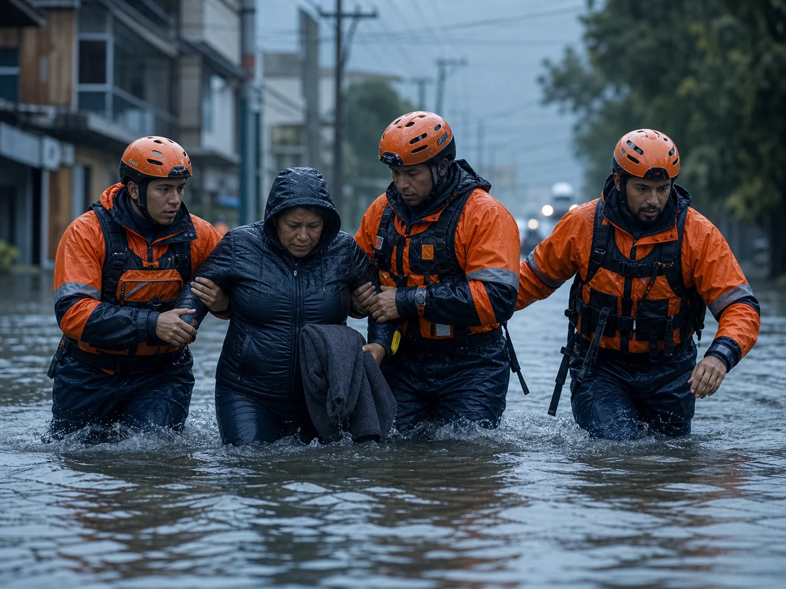
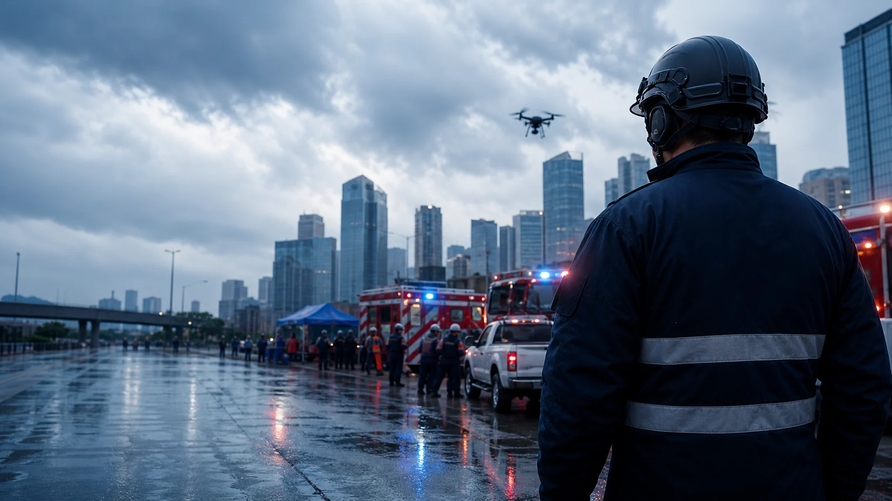
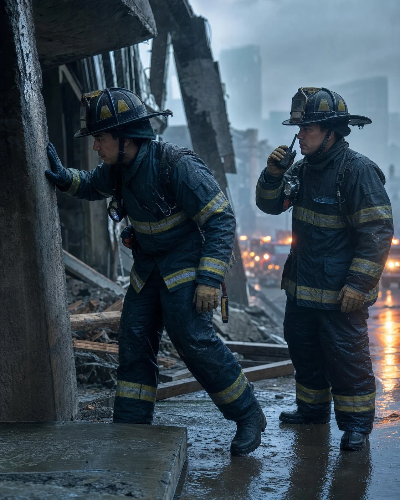
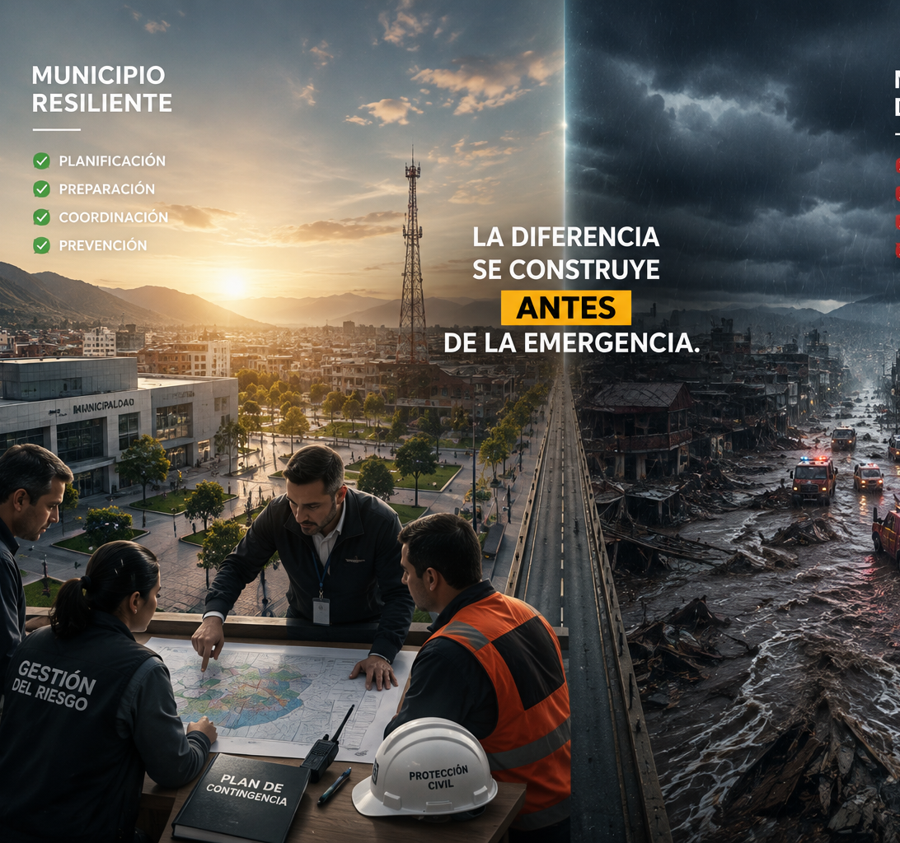
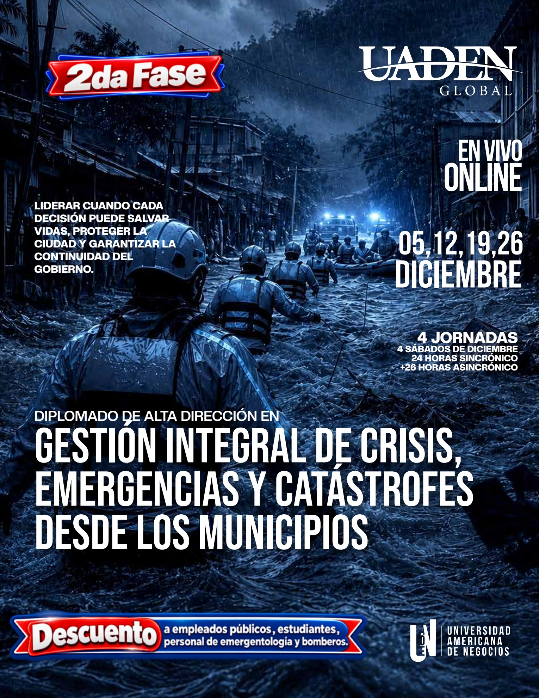

Proteger vidas
Responder con criterios claros durante las primeras horas críticas.

Diplomado de Alta Dirección en Gestión Integral de Crisis, Emergencias y Catástrofes desde los Municipios. Prepárese para proteger la ciudad, sostener la gobernabilidad y garantizar la continuidad del gobierno.
Terremotos, ciberataques, fallas de servicios, epidemias, violencia urbana y eventos climáticos pueden comprometer en pocas horas la estabilidad institucional de un gobierno local.

Responder con criterios claros durante las primeras horas críticas.

Mantener el mando, la coordinación y la confianza institucional.
Sostener los servicios esenciales y la operación del gobierno.
Gestionar información, rumores, medios y vocería institucional.
Decisiones oportunas, coordinación efectiva y liderazgo institucional marcan la diferencia entre un municipio resiliente y un municipio desbordado.
Prepárese hoy paraLa gestión integral conecta el mando estratégico con la operación en campo y la reconstrucción de una ciudad más segura.
Decidir con información, firmeza y propósito.

Convertir protocolos en acciones sincronizadas.
Aprender, innovar y reducir vulnerabilidades futuras.
La diferencia entre un municipio resiliente y uno desbordado se construye antes de la emergencia.

Diseñado para autoridades, equipos operativos y organizaciones que protegen a la población y sostienen el funcionamiento de la ciudad.
Alcaldes, intendentes, vicealcaldes, gobernadores, ministros, secretarios de Gobierno, Seguridad y Salud, directores municipales, legisladores y concejales.
Protección y Defensa Civil, cuerpos de bomberos, policías, fuerzas de seguridad, Fuerzas Armadas con funciones de apoyo, Cruz Roja y emergentología.
Empresas y organismos prestadores de agua, energía eléctrica, telecomunicaciones, transporte público, saneamiento e infraestructura crítica.
Consultores, asesores gubernamentales, universidades, organismos internacionales, ONG y profesionales vinculados con la gestión integral del riesgo.
Cuatro módulos conectan la prevención, el comando, la respuesta a catástrofes complejas y la reconstrucción resiliente.
Crisis del siglo XXI, amenazas naturales, ambientales, tecnológicas, sanitarias, químicas y energéticas.
Ciudades resilientes, mapas de riesgo, alerta temprana, cultura de prevención y planificación preventiva.
Coordinación institucional, liderazgo estratégico y responsabilidad política durante emergencias.
Centro de Operaciones, Sistema de Comando de Incidentes, logística y gestión de recursos.
Evacuaciones, infraestructura crítica, continuidad del gobierno y servicios públicos.
Comunicación estratégica, medios, rumores, redes sociales y vocería institucional.
Terremotos, tsunamis, huracanes, inundaciones, sequías, incendios y erupciones.
Accidentes aéreos, marítimos y ferroviarios; emergencias químicas, nucleares y radiológicas.
Pandemias, migraciones, refugios, poblaciones vulnerables y cooperación internacional.
Recuperación temprana, económica, institucional y social; financiamiento y gestión post desastre.
Inteligencia Artificial, Big Data, drones, sistemas satelitales y monitoreo inteligente.
Planes, protocolos, simulacros, auditoría de crisis e indicadores de resiliencia municipal.
Formación diseñada para dotar a los equipos de gobierno y respuesta de herramientas reales antes, durante y después del peor día de la ciudad.

El programa combina una metodología ejecutiva de alto nivel que transforma conocimiento internacional en decisiones y protocolos aplicables al contexto municipal.
Investigador, consultor y formador con trayectoria internacional.
Diplomado por University of California, Berkeley y George Washington University.
Formador de más de 6.000 cámaras de comercio y organizaciones empresariales.
Especialización en Crisis Management, Business Continuity y Executive Crisis Leadership.
Inscríbete en la Fase 1 y recibe GRATIS la Fase 2, obteniendo 2 diplomados oficiales por una inversión única de $249 USD.
Acceso para asistentes ilimitados, material descargable, interacción en vivo, grabaciones completas de respaldo y doble certificado de participación emitido por UADEN.
Matrícula sin costo · Asistentes ilimitados con una sola conexión
Déjenos sus datos. Un asesor le orientará sobre inscripción, descuentos corporativos y medios de pago disponibles en su país.
Atención personalizada+1 223 240 0531